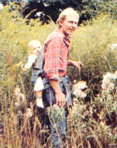
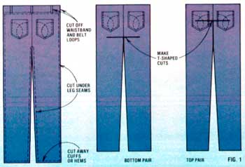
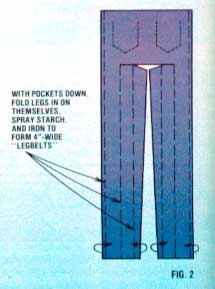
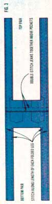
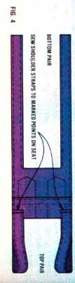

"Bye Bady Bunting, Daddy's gone a hunting... tofind some denims-old and thin-to wrap his Bady Burting in."
E.A. Byrnes
By the time our son reached the ripe old age of five months, my wife and I were determined to find a practical way to tote the little feller around with us. We'd used a stroller, of course, but were eager to share the woods and fields that we loved with our child ... to take him to places where buggy wheels feared to roll.
Well, I solved that problem-in a few hours' time and at absolutely no out-of-pocket cost-by making a denim infant pack. The baby hauler is washable, easy to carry, and adjustable . . . and if you can sew (hand-stitching will do, but use a machine if you're able... or if you can, as I did, convince a knowledgeable friend to teach you), it should be possible to whip one up in no more than a few hours.
FIRST, GET “THE BLUES”…
Begin the project by locating two pairs of adult-sized jeans that have "good" (that is, still strong) backsides. With the rear pockets facing up on your work area (the floor will do), remove the backs of the pants from their fronts. You'll want to leave the hard-to-sew-through seams attached to the discarded fronts, and use only the seam-free backs for the project. (See Fig. 1 for detailed cutting instructions.)
Now, spread the two jean backs out flat, and make a T-shaped cut up each crotch (again, as in Fig. 1). Note that the top of one "T" runs approximately through the center of the pockets, while the other lies only midway between the crotch and the bottom of the pockets.
Flip the denims pockets-down, and fold each of the four legs in upon themselves to create 4"-wide "legbelts" (see Fig. 2). If you spray-starch the legs and iron them flat, you'll find it easier to sew the belts closed... as shown in Fig. 3. Then, still using Fig. 3 for reference, go on to double-stitch the two pieces together along the line above the pockets.
At this point you're ready to try the tot-toter on for size. Tie the shorter (bottom) pair of folded legs securely around your waist. Then, with the help of a friend, hold the baby so that the infant's belly is against your back and his or her feet are on either side of the sling seat. Bring the two remaining bands up over your shoulders. By holding these, you can safely support the baby while your friend marks the spot where the shoulder straps meet the seat sling when you and your child are both most comfortable. Once those points are determined, remove the baby and the pack, and sew the straps to the marked spots on the inside of the seat (as in Fig. 4).
Finish the job by folding and hemming the cut edges and snipping off any loose threads. You can then, if you wish, decorate the "pumpkin pouch" with patches, embroidery, or the like.
Our "new" human being is just over a year old now, and he's really come to enjoy the closeness and security provided by the sling. So what are you waiting for? Carve up those Calvins, lacerate some Levis, or open up your Oshkoshes . . . your youngster has places to go and people to see!
|
 |
 |
 |
|
 |
 |
|